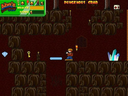
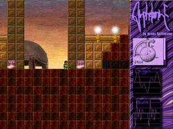
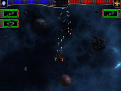
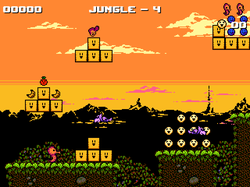
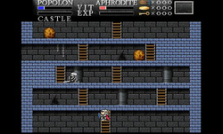
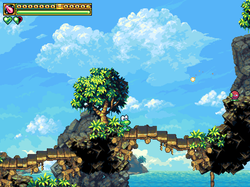
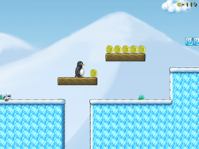
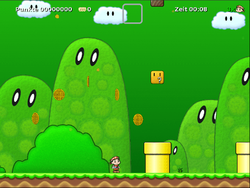
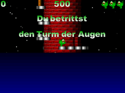

Jump and run
Zum Verständnis dieses Artikels sind folgende Seiten hilfreich:
Bei diesen Spielegattung läuft und springt der Spieler, um mit der Spielfigur ein Ziel zu erreichen.
Abe's Amazing Adventure¶

Abe's Amazing Adventure  ist ein Spiel, welches sich ein wenig am Stil der alten Jump'n'Run Spiele für den Commodore orientiert.
ist ein Spiel, welches sich ein wenig am Stil der alten Jump'n'Run Spiele für den Commodore orientiert.
Kurzbeschreibung: Als der wagemutige Abenteurer Abe erkundet man eine antike Pyramide, mit dem Ziel den Schatz des Pharaos zu finden. Auf dem Weg dorthin, muss man Schlüssel sammeln, Hindernisse überwinden und Gegnern ausweichen.
Benötigte Pakete:
abe (universe)
 mit apturl
mit apturl
Paketliste zum Kopieren:
sudo apt-get install abe
sudo aptitude install abe
Amphetamine¶

Amphetamine ist ein spannendes Spiel, welches eine Vielzahl visueller Effekte bietet.
Benötigte Pakete:
amphetamine (universe)
mit apturl
Paketliste zum Kopieren:
sudo apt-get install amphetamine
sudo aptitude install amphetamine

AstroMenace¶
AstroMenace  ist ein rasantes Shoot ’em up-Spiel. Feindlich gesinnte Außerirdische und Piraten müssen zerstört werden. Durch Aufrüstung des eigenen Raumschiffes mit neuen Waffen, besseren Systemen und Rümpfen kann man dieses immer weiter verbessern. Insgesamt stehen, in den 15 Leveln, dem Spieler 22 Schiffe zur Verfügung. Eine Anleitung zum Kompilieren der aktuellen Version ist ebenfalls im Wiki zu finden.
ist ein rasantes Shoot ’em up-Spiel. Feindlich gesinnte Außerirdische und Piraten müssen zerstört werden. Durch Aufrüstung des eigenen Raumschiffes mit neuen Waffen, besseren Systemen und Rümpfen kann man dieses immer weiter verbessern. Insgesamt stehen, in den 15 Leveln, dem Spieler 22 Schiffe zur Verfügung. Eine Anleitung zum Kompilieren der aktuellen Version ist ebenfalls im Wiki zu finden.
Seit Trusty Tahr ist das Spiel in den Paketquellen zu finden.
Barbie Seahorse Adventures¶

Kurzbeschreibung: Barbie das Seepferdchen reist durch verschiedene Level um in Seifenblasen zum Mond zu schweben. Unzählige Gegner stellen sich in den Weg...
Benötigte Pakete:
seahorse-adventures (universe)
mit apturl
Paketliste zum Kopieren:
sudo apt-get install seahorse-adventures
sudo aptitude install seahorse-adventures
Maze of Galious¶

The Maze of Galious ist ein Jump'n'Run Spiel. Es handelt sich um ein Remake von Knightmare II: The Maze of Galious aus dem Hause Konami.
Kurzbeschreibung: Bestehe mit Popolon und Aphrodite diverse Level. Besiege mit dem Schwert und Verstand unzählige Gegner, sammle Schlüssel ... und befreie Pampas aus den Händen des bösen Priesters.
Benötigte Pakete:
mazeofgalious (universe)
mit apturl
Paketliste zum Kopieren:
sudo apt-get install mazeofgalious
sudo aptitude install mazeofgalious
Frogatto¶

Frogatto & Friends ist ein klassisches Jump'n'Run Spiel mit einem kleinen Frosch als Hauptfigur.
Kurzbeschreibung: Frogattos Freunde sind verschwunden. Hilf ihm beim Wiederfinden in einer magischen Welt, die allerdings nicht nur von Elfen bevölkert ist. In dieser Spielewelt werden alle Fähigkeiten eines Frosch benötigt: springen, schwimmen, klettern, verstecken und (nicht nur) Fliegen mit der Zunge fangen.
Benötigtes Paket:
frogatto (multiverse)
mit apturl
Paketliste zum Kopieren:
sudo apt-get install frogatto
sudo aptitude install frogatto
Supertux¶

SuperTux ist ein Jump'n'Run Spiel, das mehr oder weniger an Super Mario oder Great Giana Sisters erinnert.
Kurzbeschreibung: Mit Tux durch die einzelnen Level laufen und böse Gegner besiegen, indem man auf sie springt, Prämien aufsammeln und die neuen Fähigkeiten nutzen ...
Benötigtes Paket:
supertux (universe)
mit apturl
Paketliste zum Kopieren:
sudo apt-get install supertux
sudo aptitude install supertux
Secret Maryo Chronicles¶

Secret Maryo Chronicles ist ein freies 2D Jump'n'Run im Stile der bekannten Reihe Super Mario von Nintendo, das bis einschließlich Ubuntu 15.10 aus den Paketquellen installiert werden kann.
Kurzbeschreibung: Als Maryo muss der Ausgang innerhalb einer bestimmten Zeit erreicht werden. Dazu muss man viele Gegner bekämpfen und sein Geschick beweisen.
Benötigte Pakete:
smc
smc-music (für die Musikdateien)
ttf-dejavu-core (Schriftart)
mit apturl
Paketliste zum Kopieren:
sudo apt-get install smc smc-music ttf-dejavu-core
sudo aptitude install smc smc-music ttf-dejavu-core
Aufgrund eines Bugs muss man in Ubuntu 12.04 vor dem ersten Spielen folgenden Befehl im Terminal [2] [3] ausführen:
sudo mkdir /usr/share/games/smc/campaign
Danach startet das Spiel wieder normal.
Installation über Fremdquelle¶
Da die Pakete bei Ubuntu 16.04 nicht mehr dabei sind, können diese sehr einfach über die Paketquelle von Styrion.net installiert werden.
Hinweis!
Fremdsoftware kann das System gefährden.
apt-key adv --recv-keys --keyserver keyserver.ubuntu.com 2FAB19E7CCB7F415 echo "deb http://styrion.at/apt/ ./" > /etc/apt/sources.list.d/styrion.list
Toppler¶

Toppler ist ein Remake des Jump'n'Run Spieles "Nebulus" für den C64.
Kurzbeschreibung: Der Turm muss in der vorgegebenen Zeit erklommen werden. Zahlreiche Hindernisse und Feinde kommen dem Helden des Spieles in die Quere.
Benötigtes Paket:
toppler (universe)
mit apturl
Paketliste zum Kopieren:
sudo apt-get install toppler
sudo aptitude install toppler
- Erstellt mit Inyoka
-
 2004 – 2017 ubuntuusers.de • Einige Rechte vorbehalten
2004 – 2017 ubuntuusers.de • Einige Rechte vorbehalten
Lizenz • Kontakt • Datenschutz • Impressum • Serverstatus -
Serverhousing gespendet von